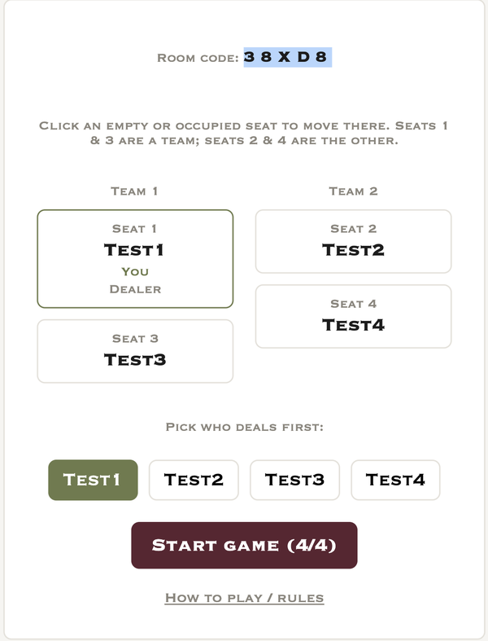
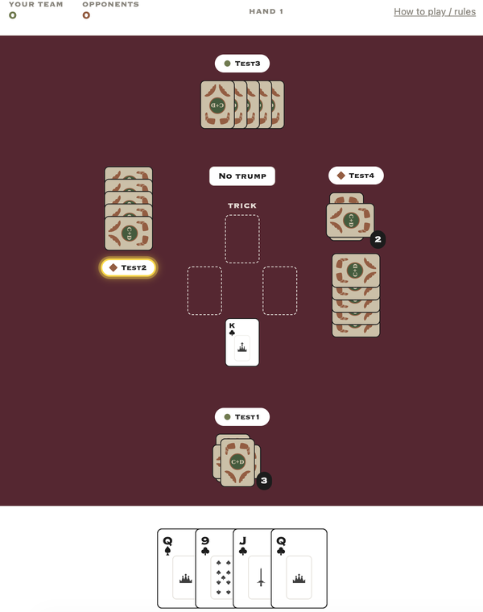
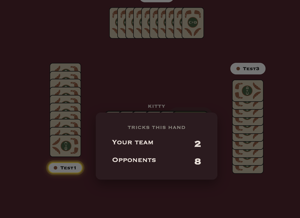
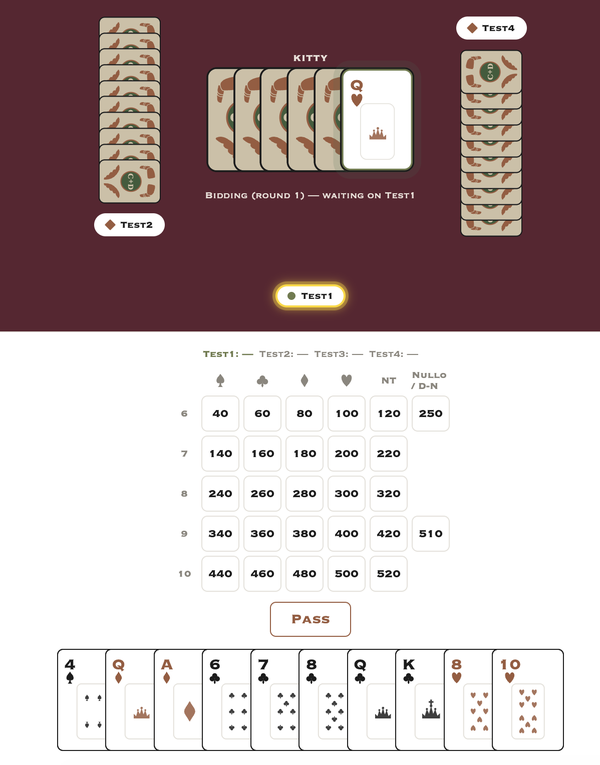
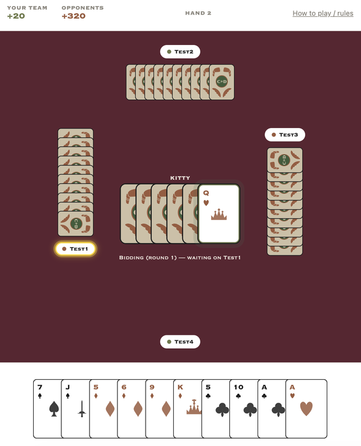

AI-native PM tools covering the full product workflow. Each works standalone — and each can hand its output to the next.
Takes a rough user description and produces a detailed enterprise persona with Jobs to Be Done statement, org context, tech comfort, key interactions, and relationship friction, detailed enough to anchor a journey map.
A journey map is only useful if it reflects what actually happens, not what teams assume. This tool provides an editable, stage-by-stage canvas for mapping customer actions, goals, touchpoints, emotions, and organizational responses, with a draggable sentiment curve and one-click AI export for analysis.
Four sequential AI calls that weigh one Initiative against competing initiatives with strategy, budget, and demand evidence, then decompose it into front-stage Business Epics and backstage Architecture Epics — exploring both together, splitting only where an epic genuinely needs runway before front-stage work can start. Each epic gets its riskiest Demand/Feasibility/Viability assumptions and a benefits-realization plan naming the measurement instrumentation that must be built.
One executive-ready pitch per epic — Business or Architecture — grounded in financial and demand evidence, with a rough order-of-magnitude effort estimate for the Epic Prioritizer's WSJF/RICE job size. Pitch framing follows the epic's caseType, not its kind: a backstage Architecture epic with a customer-facing case (fraud analytics protecting member trust) still gets the customer-value narrative, not a generic technical writeup.
Two sequential AI calls that rank every Business and Architecture epic in one pass, scored on BOTH the WSJF components and the RICE components at once — so the board toggles between methods instantly with no re-run. Architecture epics take their business value from what they unblock and typically dominate risk-reduction; the board recomputes every score in code and anchors job size to the epic's Business Case effort.
One AI call that sequences every prioritized epic — funded this increment, or profitable and awaiting capacity — into a milestone plan spanning up to 18 months. Funded epics fill the earliest release windows; the rest follow in rank order as capacity frees. The dependency list stays deliberately light: a named approval or a genuine architecture-epic runway prerequisite, nothing more.
Two sequential AI calls that write a standard-template Business Requirements Document for ONE funded epic — never a feature, story, or technical breakdown. A requirements core (scope boundary, prioritized business requirements with measurement enablers flagged, high-level NFRs each tied to the epic's Feasibility assumption) followed by the executive package: summary, objectives, stakeholders, constraints, cost-benefit, and sign-off.
Five sequential AI calls that turn one funded epic's BRD into its full delivery-doc suite: MoSCoW'd Features with feature-level NFRs and refined sizing (stories inherit their feature's priority, never prioritized themselves), a Solution Outline with target-state architecture and simple user flows, a Security & UAT plan, and Developer/User documentation. Requirement coverage is computed in code, not generated.
Two sequential AI calls that turn one epic's extended backlog into a delivery plan: MVP scope, a sprint-by-sprint allocation, baseline and worst-case estimates, and a RAID log. Sprint loads and dependsOn ordering are recomputed in code — an over-capacity sprint or a story landing no earlier than its dependency both raise a visible warning, wherever the plan is consumed. Finishes with a Jira bulk-import CSV.
Enter your V2MOM (vision, values, methods, and measures) and this tool cascades it directly into a Hoshin Kanri X-matrix. Values become annual objectives. Methods map exactly to activities. Measures drive key metrics. The matrix is color-coded by value group, correlation dots are interactive, and Claude can align and refine the whole thing on demand.
A structured self-assessment across the core dimensions of product operations delivery. Surfaces where teams are strong, where they are struggling, and what to prioritize first.
Not everything here is a PM tool. This is what I build when the constraint is a friend group and a weekend, not a product roadmap.
500 is the card game I've played with the same group of friends since college. It's simpler than bridge, more interesting than euchre. The existing online versions are buggy, clumsily monetized, and don't follow our house rules. I've wanted to build my own since I was working in the Java games division at Nokia. That was twenty years ago. I finally built it in two days with Claude.
No accounts, no server, no database. Share a room code; play from anywhere. Four players, peer-to-peer, entirely in the browser.




